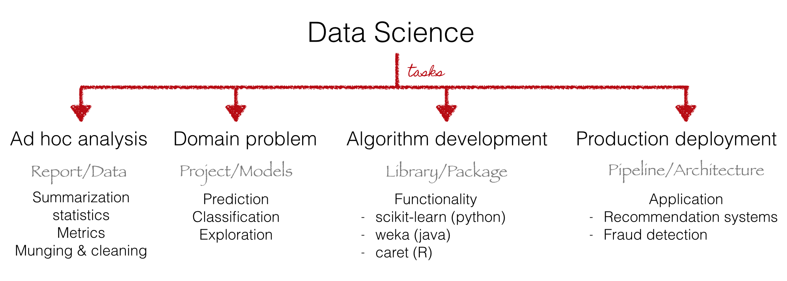
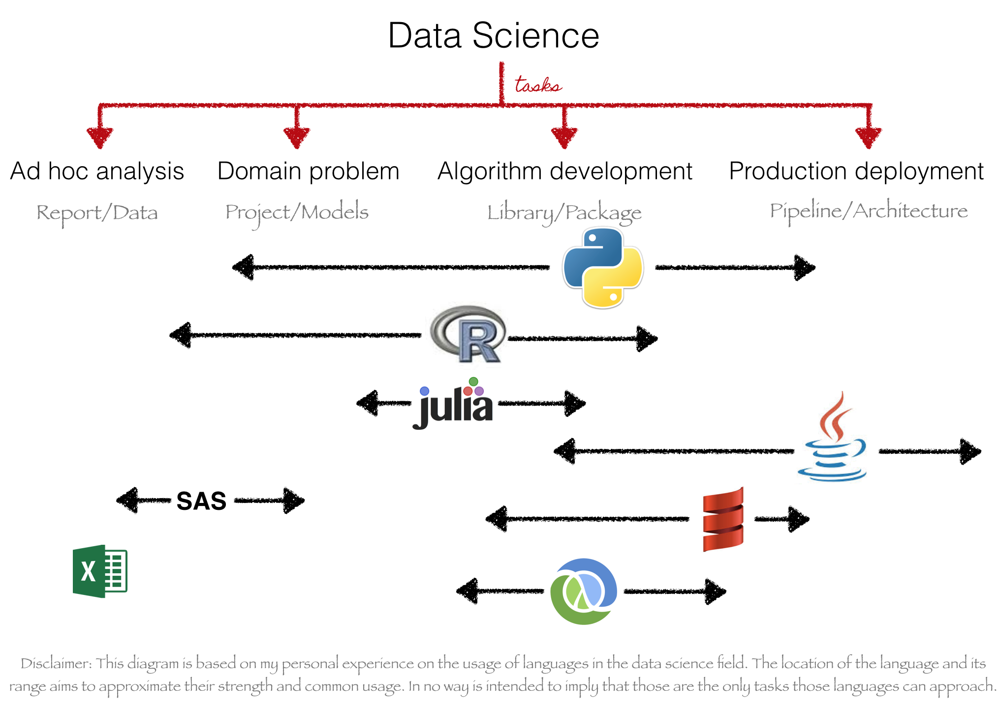
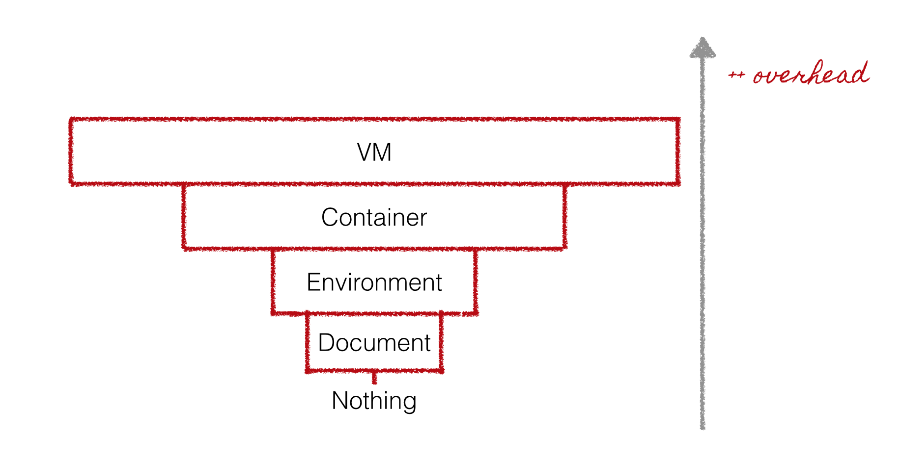
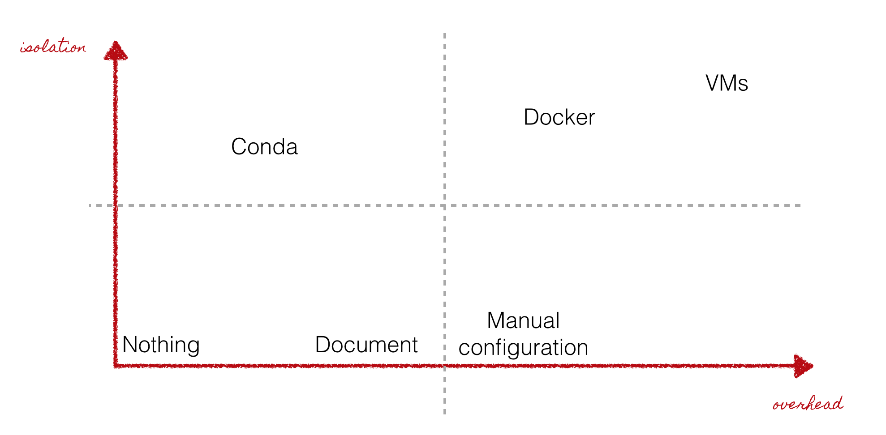
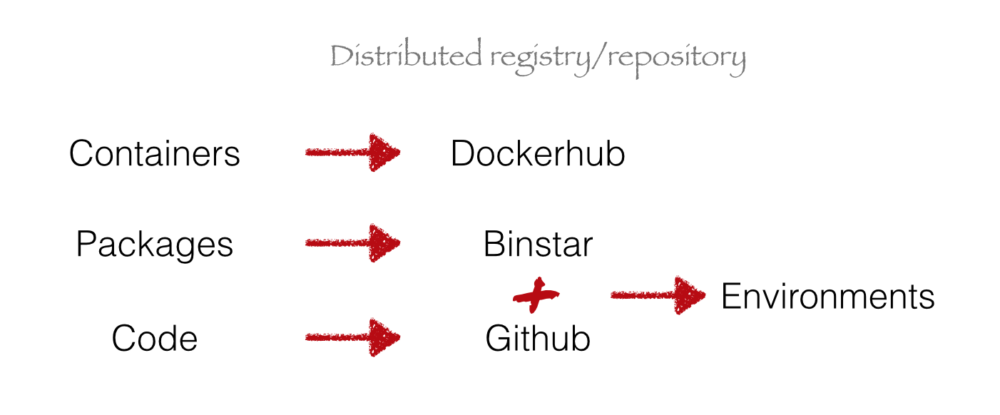
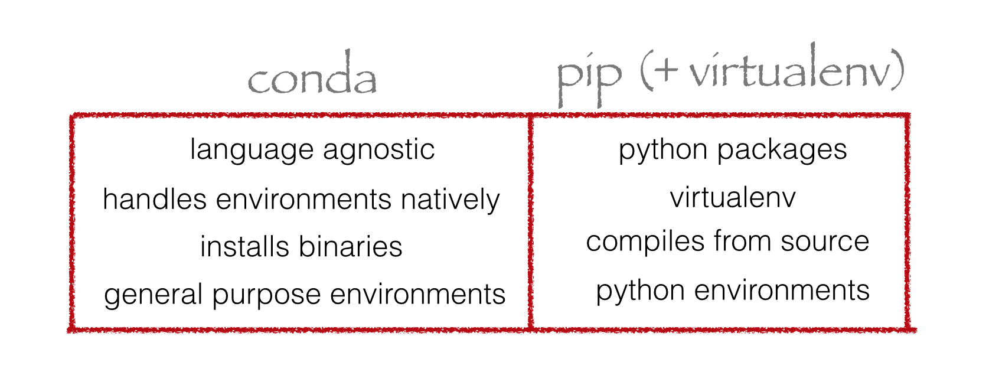
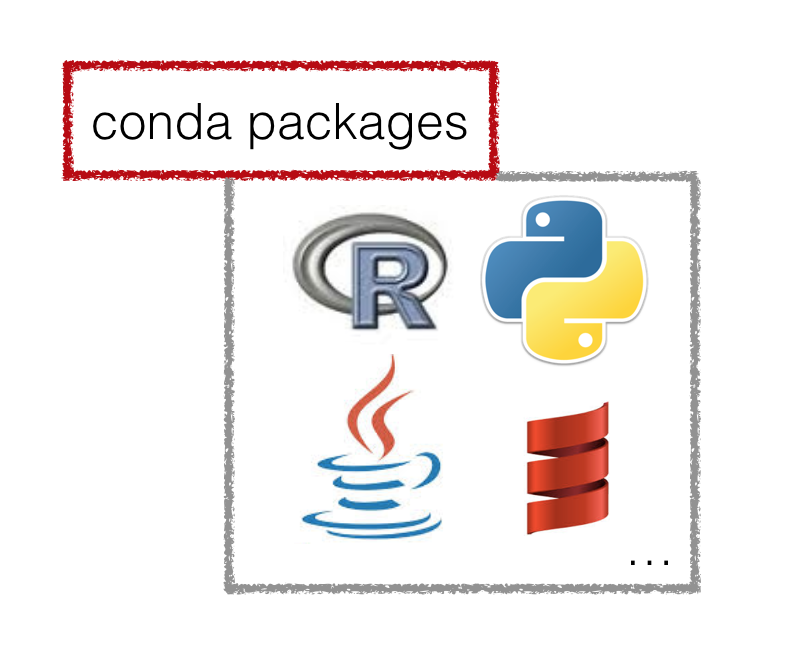
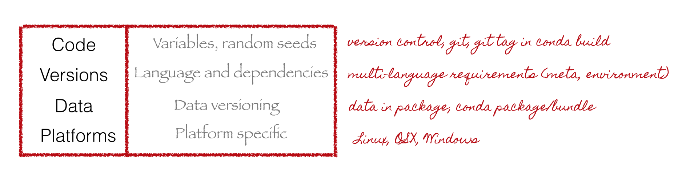

Reproducible Multi-language
Data Science with Conda
PyData Dallas 2015
by Christine Doig
This talk
http://chdoig.github.com/pydata-dallas-conda
Data Science
Tasks
Contributors

Data Science
Multi-language
Most commonly used tools
Data Science languages
Language agnostic applications and multi-language interfaces

Multi-language
Reproducible
Requirements

Methods
Isolation vs Overhead
Share
Reproducible
Conda
Conda
Language-agnostic cross-platform package and environment manager written in Python
Conda vs Anaconda vs Miniconda
Conda: Package and environment manager
Anaconda: Python + Conda + a bunch of packages
Miniconda: Python + Conda
Conda vs pip
Conda & pip
$ conda install pip
$ pip install foo
Reproducible Multi-language Data Science with Conda
Conda - Data Science

Conda - Multi-language
Conda is language-agnostic
Conda - Reproducibility
Get it
Useful tip
Linux-64
$ wget http://bit.ly/minicondaInstall packages
$ conda install python=2.7 mongodb pandas bokeh=0.8Manage environments
Write your environment.yml file
vim environment.yml
name: pydata1
dependencies:
- python=2.7
- mongodb
- pandas
- bokeh=0.8.2
Manage environments
Create your environment
$ conda env create
Fetching package metadata: ..........
Solving package specifications: .Linking packages ...
[ COMPLETE ]|#################################################################################################################################################################################################################| 100%
#
# To activate this environment, use:
# $ source activate pydata1
#
# To deactivate this environment, use:
# $ source deactivate
#
Manage environments
Activate your environment
$ source activate pydata
discarding /Users/cdoig/anaconda/bin from PATH
prepending /Users/cdoig/anaconda/envs/pydata1/bin to PATH
Manage environments
List all the packages in that environment
$ conda list$ conda env export$ conda env export > freeze.ymlManage environments
$ conda list
# packages in environment at /Users/cdoig/anaconda/envs/pydata1:
#
bokeh 0.8.2 np19py27_1
dateutil 2.4.1 py27_0
flask 0.10.1 py27_1
gevent 1.0.1 py27_0
gevent-websocket 0.9.3 py27_0
greenlet 0.4.5 py27_0
itsdangerous 0.24 py27_0
jinja2 2.7.3 py27_1
libsodium 0.4.5 2
markupsafe 0.23 py27_0
mongodb 2.4.6 0
ncurses 5.9 0
numpy 1.9.2 py27_0
openssl 1.0.1k 1
pandas 0.16.0 np19py27_1
pip 6.1.1 py27_0
python 2.7.9 1
...
Manage environments
$ conda env export > freeze.yml
name: pydata1
dependencies:
- bokeh=0.8.2=np19py27_1
- dateutil=2.4.1=py27_0
- flask=0.10.1=py27_1
- gevent=1.0.1=py27_0
- gevent-websocket=0.9.3=py27_0
- greenlet=0.4.5=py27_0
- itsdangerous=0.24=py27_0
- jinja2=2.7.3=py27_1
- libsodium=0.4.5=2
- markupsafe=0.23=py27_0
- mongodb=2.4.6=0
- ncurses=5.9=0
- numpy=1.9.2=py27_0
- openssl=1.0.1k=1
- pandas=0.16.0=np19py27_1
- pip=6.1.1=py27_0
- python=2.7.9=1
- ...
Manage environments
List all your environments in your machine
$ conda info -eBuild packages
Write your conda recipe:
meta.yaml
package:
name: pyfaker
source:
git_tag: 0.3.2
git_url: https://github.com/tpn/faker.git
requirements:
build:
- python
- setuptools
run:
- python
test:
imports:
- faker
about:
home: http://www.joke2k.net/faker
license: MIT
build.sh
#!/bin/sh
$PYTHON setup.py install
Share your packages
Binstar
$ conda install binstar$ binstar login$ binstar upload ~/miniconda/conda-bld/linux-64/pyfaker-0.3.2-py27_0.tar.bz$ conda install -c chdoig pyfakerCreate production and dev channels
Get the stable production package
$ conda install bokehGet the latest dev build
$ conda install -c bokeh/dev bokehCreate production and dev channels
Add channels in your environment file + pip dependencies
name: pydata2
channels:
- asmeurer
- chdoig
- quasiben
dependencies:
- python=2.7
- r
- r-data.table
- bokeh
- nutch
- spark
- scipy
- pip
- pip:
- pattern
- gensim
- textblob
- ijson
- click
- solrpy
- elasticsearch
A practical example
Topik - An example
Motivation:
Topik - An example
Topic Modeling
A topic model is a type of statistical model for discovering the abstract “topics” that occur in a collection of documents
Topic Modeling
http://www.cs.princeton.edu/~blei/topicmodeling.htmlGensim
https://radimrehurek.com/gensim/LDAvis
http://cpsievert.github.io/LDAvis/reviews/vis/Hack
code: github? X
versions: python? gensim? R? ldavis? X
platform: specific? X
data: where? harcoded path? X
Project
code: github? Y
versions: python? gensim? R? ldavis? Y
platform: specific? X
data: where? harcoded path? X
Library
versions: python? gensim? R? ldavis? Y
platform: specific? Y
data: where? harcoded path? X
Application
versions: python? gensim? R? ldavis? Y
platform: specific? Y
data: where? harcoded path? ~
Special thanks to the conda developers:
Nepal, 2009
Questions?
Slides:
http://chdoig.github.com/pydata-dallas-conda
Email: christine.doig@continuum.io
Twitter: ch_doig